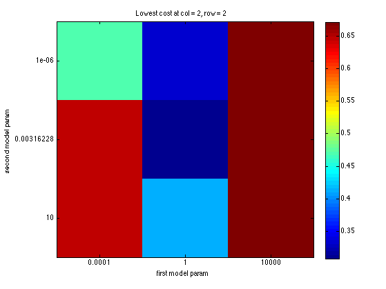

Fit a rbf kernelized logistic regression model
We follow the same train/test split as linearKernelDemo so that results are comparable
% This file is from pmtk3.googlecode.com %loadData('crabs'); loadData('fglass'); % 6 classes, X is 214*9 X = [Xtrain; Xtest]; y = canonizeLabels([ytrain; ytest]); % class 4 is missing, so relabel 1:6 setSeed(0); split = 0.7; [X, y] = shuffleRows(X, y); X = rescaleData(standardizeCols(X)); N = size(X, 1); nTrain = floor(split*N); nTest = N - nTrain; Xtrain = X(1:nTrain, :); Xtest = X(nTrain+1:end, :); ytrain = y(1:nTrain); ytest = y(nTrain+1:end); % 2D CV lambdaRange = logspace(-6, 1, 3); gammaRange = logspace(-4, 4, 3); paramRange = crossProduct(lambdaRange, gammaRange); regtypes = {'L2'}; %L1 is a bit better but a bit slower for r=1:length(regtypes) regtype = regtypes{r}; fitFn = @(X, y, param)... logregFit(X, y, 'lambda', param(1), 'regType', regtype, 'preproc', ... preprocessorCreate('kernelFn', @(X1, X2)kernelRbfGamma(X1, X2, param(2)))); predictFn = @logregPredict; lossFn = @(ytest, yhat)mean(yhat ~= ytest); nfolds = 2; % better to use 5; useSErule = true; plotCv = true; tic; [LRmodel, bestParam, LRmu, LRse] = ... fitCv(paramRange, fitFn, predictFn, lossFn, Xtrain, ytrain, nfolds, ... 'useSErule', useSErule, 'doPlot', plotCv, 'params1', lambdaRange, 'params2', gammaRange); time(r) = toc yhat = logregPredict(LRmodel, Xtest); nerrors(r) = sum(yhat ~= ytest); end errRate = nerrors/nTest
time = 5.170523989000000 errRate = 0.400000000000000